Design process for
a tech
consultancy:
Elemental Concept
Elemental Concept’s multidisciplinary team shares a common goal: using technology to drive positive change for businesses and finding the right solutions for clients in technology strategy, software development, cyber security, AI, and data science.
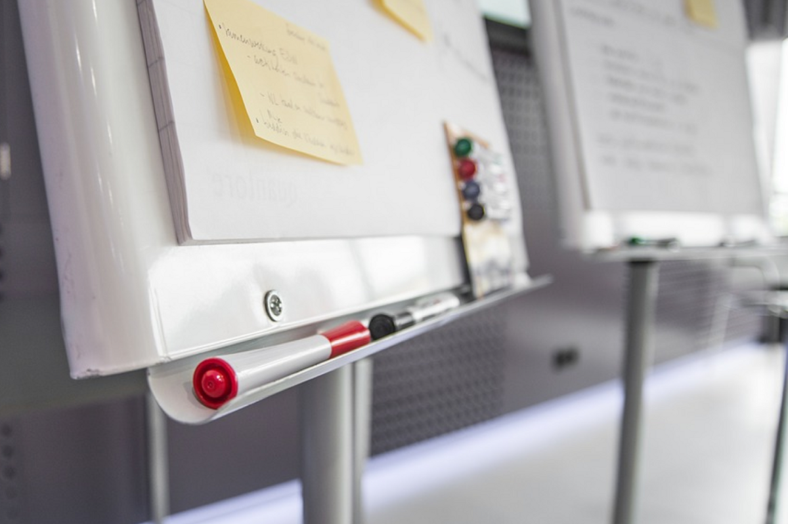
In a business consultancy, a structured design process is essential for fostering collaboration and ensuring project success, as it deepens our understanding of client needs, enabling us to develop effective strategies while eliminating unnecessary features, ultimately leading to improved outcomes for both clients and users.
Each project began with a discovery workshop to align designers, clients, and stakeholders, turning abstract ideas into actionable business opportunities and creating a roadmap for a Minimum Viable Product (MVP) that balanced user needs with business goals.
During these workshops, I guided discussions to help the team refine ideas into practical solutions, laying a strong foundation for application design. And after the sessions, I documented the insights and action items, developed design concepts based on the feedback received, and collaborated with developers to ensure seamless implementation.
Elemental Concept
Tools
Skills
UX / UI design · Discovery workshops · Responsive design · Design thinking · Cross-functional Collaboration · Research & Testing
step 1:
client onboarding
Every new project begins with a conversation to explore the client’s vision, goals, and expectations, uncovering the essence of their business and market landscape. These discussions focus not just on what the client wants, but why it matters to them.
From these insights, clear objectives are established, defining success metrics, key deliverables, and a project timeline, along with a communication plan to ensure alignment throughout the process.
step 2:
research
The next step involves thorough research on the market, competitor strategies, and current trends to shape the discovery workshop agenda and ensure success.
market research
Exploring the broader market landscape identifies trends, opportunities, and challenges, providing context for the client’s product while uncovering the target audience's needs.
What are the key features and services offered by competitors in this market?
What are the key features and services offered by competitors in this market?
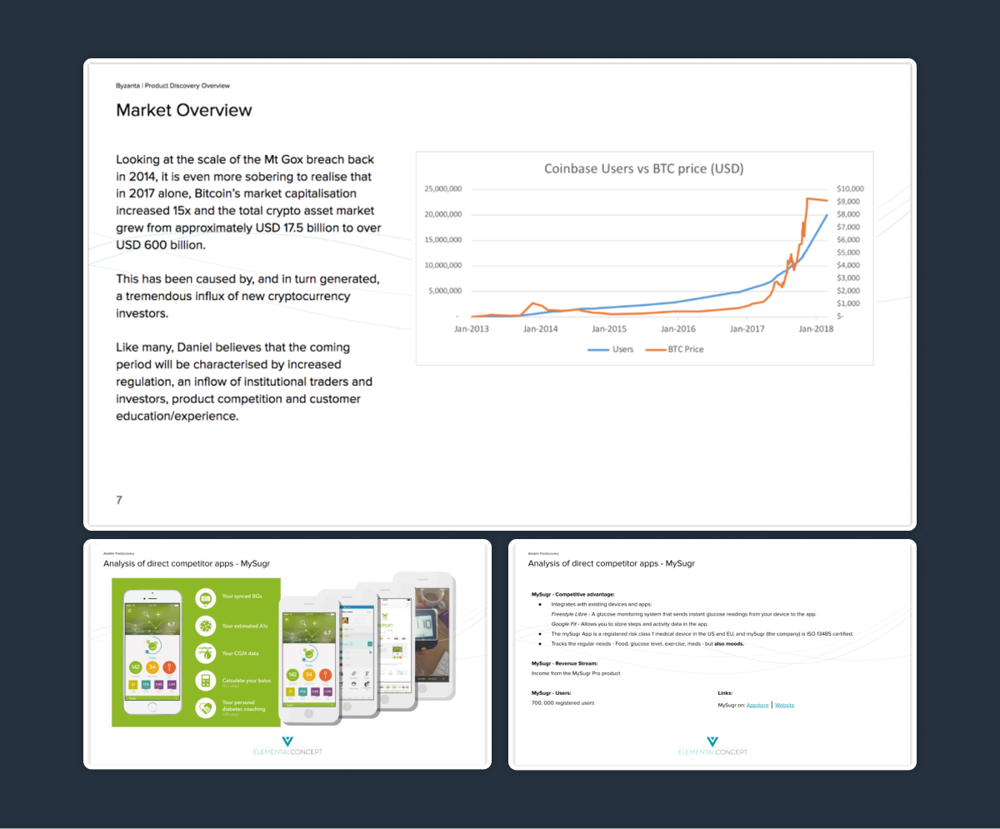
competitor analysis
Assessing comparable offerings from usability and product perspectives, with an emphasis on user journeys and design impressions, to gain insights into how competitors meet user needs and uncover their strengths and weaknesses.
Who are our main competitors, and what specific products or services do they offer?
What are the strengths and weaknesses of our competitors in terms of features, pricing, customer service, and user experience?
What feedback and reviews do customers provide about competitor products, and what common pain points or areas for improvement are mentioned?
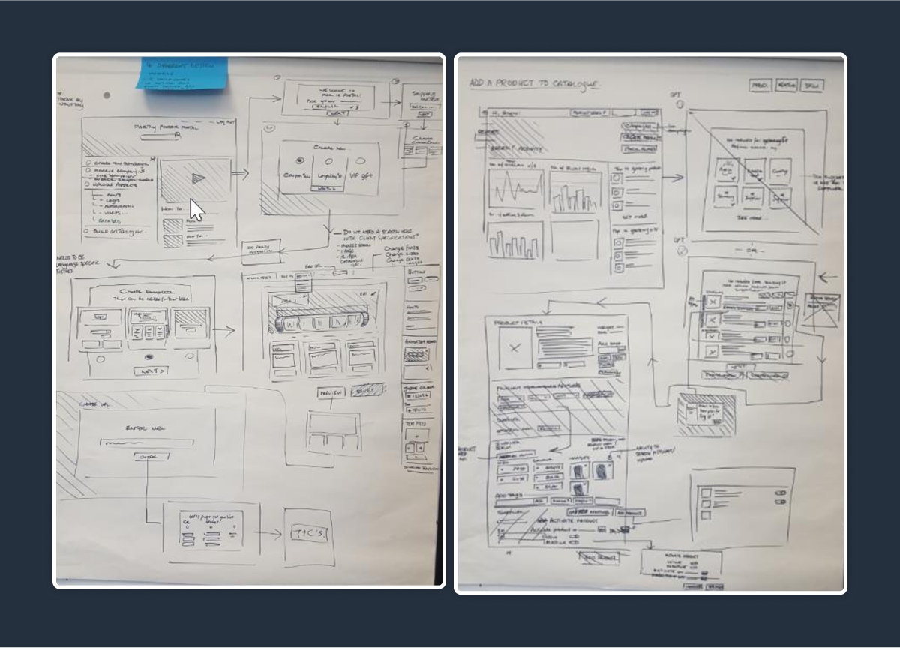
tips for efficient design research
Review comparison articles to identify competitors’ design strengths and weaknesses.
Combine article insights with personal UI/UX evaluations for a comprehensive design report.
Use app store feedback to uncover user pain points and design issues.
Trust instincts; document observations with reasoning and supporting screenshots.
step 3:
discovery workshop
After the research, the team is prepared for the Product Discovery workshop to transform ideas into concrete visions. This collaborative session explores the business model, generates ideas for commercialisation, and scopes potential functionalities along with the design of the digital tool. It shapes the product's direction and ensures alignment with user needs and business objectives.
business model canvas
The Business Model Canvas enhances discovery workshops by providing a visual framework that aligns stakeholders, identifies key business elements, encourages collaboration, and focuses discussions on user needs, ultimately guiding the development of effective design solutions.
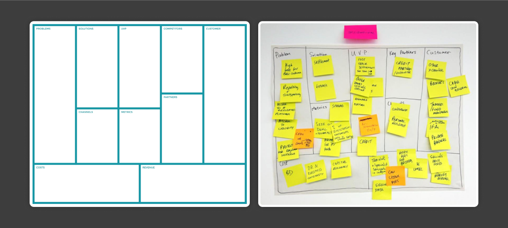
storyboarding - persona creation & user journeys
Next, storyboarding is employed to visualise user interactions with the product, followed by persona creation and mapping out user journeys to understand user needs and behaviours.
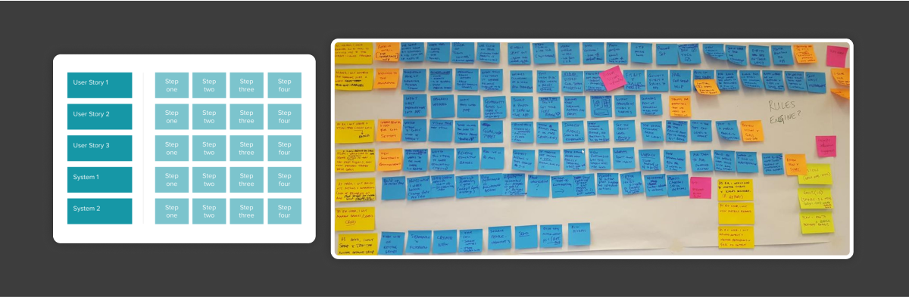
ideation & concept sketching
This sets the stage for ideation and concept sketching, where ideas are generated and initial designs are sketched to explore potential solutions.
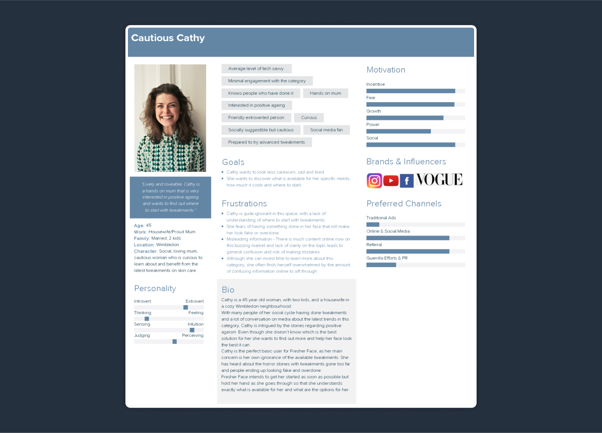
tips for a successful workshop
Always carry a notebook and be prepared to sketch. The ability to quickly visualise ideas is invaluable. Rough sketches suffice to clarify concepts for both the team and the client, so precision is not essential.
Stay focused and limit side conversations. Product Discovery days are intense and packed with agendas, making it crucial to maintain a single discussion to ensure everyone can contribute and share their thoughts, particularly regarding design aspects.
Be flexible and ready to adapt. Each Product Discovery session is unique, and designers may need to assist in various ways, from creating quick wireframes to initiating story mapping.
step 4:
design & implementation
After the discovery workshop, the design, product, and engineering teams form a squad that operates within the Scrum framework, combined with a UX design process.
This squad works collaboratively to create prototypes and gather user feedback, refine user interaction flows, develop the product's technical architecture, and implement the final solution. This structured approach ensures that the product evolves based on user insights and aligns with business goals throughout the development cycle.
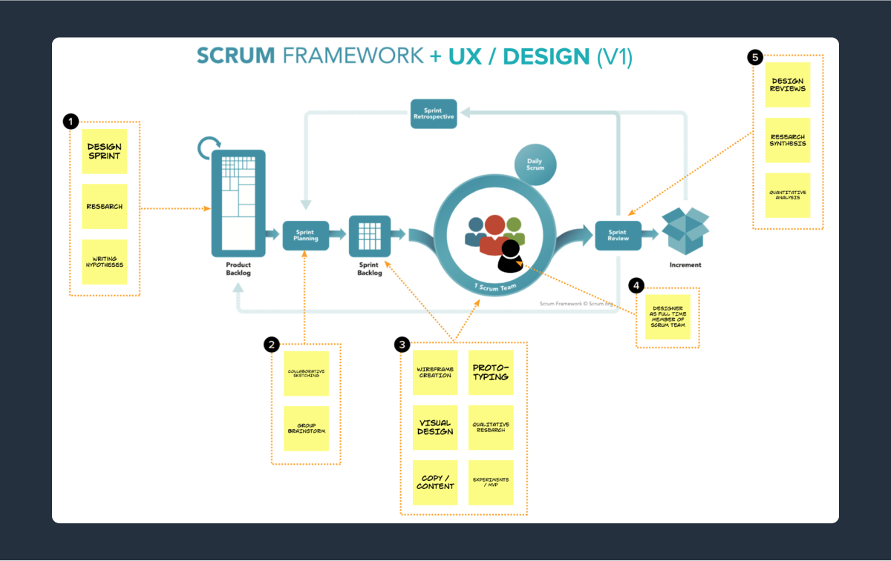
story map & product structure
The discovery workshop findings culminate in creating a storymap and defining the product structure, which organises features and functionalities, ensuring a clear pathway for development and alignment with user needs and business objectives.
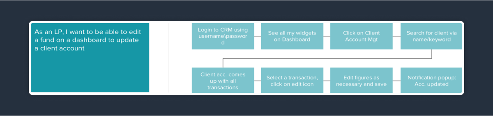
user interaction flows
Before prototyping begins, the squad will outline the user journey, detailing the steps users take to complete tasks. This process helps identify and refine the product’s structure and navigation, ensuring they align with user needs. This foundational understanding guides the development of prototypes, enabling more effective testing and validation of design concepts.
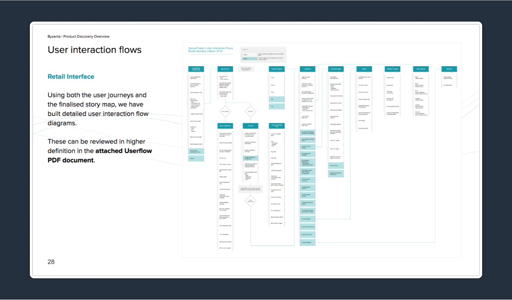
prototyping & user testing
Prototyping creates early product models that help stakeholders visualise features and gather user feedback for continuous improvement. This process improves team communication, reduces risks by identifying issues early, and results in a more user-focused final product.
The main challenge lies in managing client expectations and obtaining approval for design changes based on user feedback. Involving clients in user testing provides them with direct insights into proposed changes, encouraging collaboration and aligning design with user needs. A structured feedback loop with regular check-ins supports discussions on user insights and design updates.
technical architecture
Once the prototypes are developed and user feedback is gathered, the technical architecture can be designed to support the refined user interaction flows and functionalities. This ensures that the underlying system structure is aligned with the validated design and user requirements before implementation.
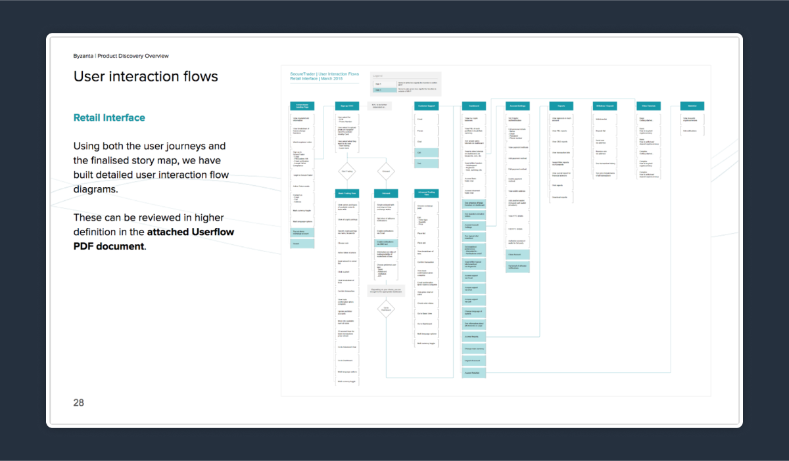
step 5: launch, & continuous improvement
The final step, Launch and Continuous Improvement, involves deploying the product to users and closely monitoring its performance. This phase begins with a successful launch, where the product is made available to the target audience. Once launched, the project is handed over to the client, providing them with the necessary documentation and training to manage the product effectively.
Ongoing evaluation occurs through user feedback and analytics, allowing the team to gather insights on user interactions and satisfaction. This information helps identify areas for enhancement. Continuous improvement processes are then implemented to make iterative updates and optimisations, ensuring the product remains aligned with user needs and market trends. By prioritising ongoing feedback and adaptation, the product can evolve effectively, leading to sustained user engagement and satisfaction over time.
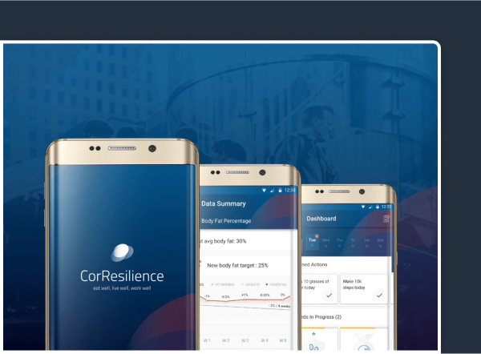
CorResilience
For managing, editing, and organising references from just one library and enabling collaboration with other researchers by sharing references and ideas.
Aladdin
For reading, highlighting, and annotating PDFs, within the Reference Manager while reading papers. Keeping everything across multiple documents in one place.
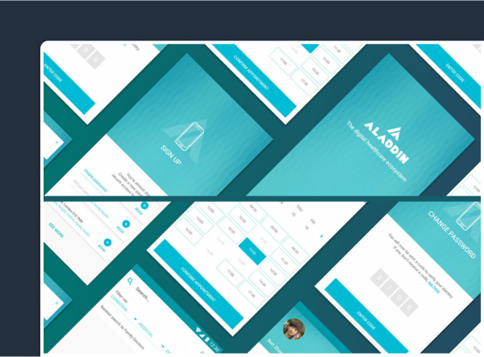
learnings
collaboration
Collaboration is essential in a consultancy environment, as designers work closely with product owners, engineers, and stakeholders to align project goals with user needs through clear communication and active listening. Teamwork fosters a shared understanding, encourages collective problem-solving, and builds strong relationships that enhance trust and promote a culture of feedback, all of which are crucial for successful outcomes.
structured processes
Implementing structured processes, such as the Scrum framework combined with UX design, is vital for effective project management. A clear roadmap guides teams through each phase, ensuring alignment on objectives and facilitating efficient workflows while allowing for regular feedback and adjustments based on user insights. This approach enhances accountability and helps deliver high-quality, user-centered solutions that meet client expectations.